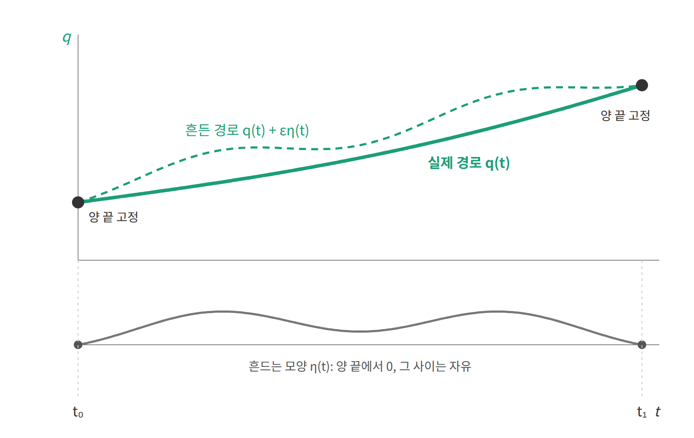

라그랑지안: 매 순간의 점수에서 운동방정식으로
Δt를 0으로 보내면 어떻게 될까? 점의 개수가 늘어나면서 변수는 무한히 많아지고, 결국 변수는 함수 y(t) 자체가 된다. 그에 따라 점수의 합은 적분이 되고, "각 y_k로 편미분한다"는 조작은 "함수에 대해 미분한다"는 조작이 된다. 합이 적분으로 바뀌면, 적분 안에서 매 순간 더해지는 것은 무엇일까?
역사: 모페르튀이에서 라그랑주까지
빛에서 시작된 "가장 작게 만드는 길"이라는 생각을 역학으로 가져온 사람은 모페르튀이였다. 그는 1744년 최소 작용 원리를 역학의 일반 원리로 제안했다. 1750년대에는 오일러와 라그랑주가 함수를 변수로 하는 최적화, 곧 변분법을 체계화했고, 1788년 라그랑주는 『해석역학』에서 힘과 화살표 대신 하나의 함수에서 모든 운동을 이끌어 냈다.
라그랑주는 이 책의 서문에 책 안에 그림이 한 장도 없다고 적었다. 물체에 걸리는 힘을 하나하나 그리는 대신, 함수 하나를 적고 계산만으로 운동을 얻겠다는 선언이었다. 이 장에서 따라가 보려는 것도 바로 그 방식이다.
순간의 점수와 경로의 점수
던진 공의 점수에서 매 구간 Δt를 곱해 더한 것은 "운동에너지 − 위치에너지"였다. 경로가 연속이 되어 합이 적분으로 바뀌어도 이 양은 그대로 적분 안에 남는다. 이 양은 그 순간의 위치와 속도만 알면 계산되므로, 물체의 위치를 q, 그 시간 미분인 속도를 q̇으로 쓰면 q와 q̇의 함수가 된다. 이렇게 각 순간의 점수를 주는 함수 L(q, q̇) = K − U를 라그랑지안 (각 순간의 점수, Lagrangian)이라 한다. 여기서 K는 운동에너지, U는 위치에너지다.
그렇다면 경로 전체의 점수는 L로 어떻게 쓸까? 이산 경로에서는 각 구간의 L에 Δt를 곱해 모두 더했으니, 연속 경로에서는 L을 경로 q(t)를 따라 시간으로 적분하면 된다. 이 적분값이 연속 경로의 작용 𝒜다.
작용의 기호에 붙은 대괄호 [q]는 𝒜가 숫자 하나가 아니라 함수 q(t) 전체를 받는다는 표시다. 이렇게 "함수를 받아 숫자를 돌려주는 함수"를 범함수(functional)라 한다.
이제 역사에서 본 최소 작용 원리를 이 이름으로 적을 수 있다. 양 끝점이 정해진 경로들 가운데 실제로 일어나는 운동은 𝒜의 기울기가 0인 경로다. 던진 공에서 점 하나하나에 대해 확인한 것을 연속인 경로에 대해 말한 것이다.
경로를 흔들어 보기
그런데 𝒜는 함수 전체를 받으므로, 여기서 말하는 기울기는 숫자 몇 개에 대한 편미분이 아니다. 그렇다면 함수에 대한 기울기는 어떻게 계산할까? 이산 경로에서 점 하나를 조금 옮기고 점수의 변화를 봤듯이, 경로 q(t)를 양 끝은 그대로 둔 채 조금 흔들어 보면 된다. 흔드는 모양을 η(t), 흔드는 정도를 ε이라 하면 흔든 경로는 q(t) + εη(t)이고, 양 끝은 고정되어 있으므로 η(t₀) = η(t₁) = 0이다. 이제 작용을 ε으로 미분하고 두 번째 항을 부분적분하면 다음을 얻는다.

실제 경로라면 이 값은 어떤 η를 골라도 0이어야 한다. 그런데 η는 양 끝만 0이면 얼마든지 자유롭게 고를 수 있으므로, 적분이 항상 0이 되려면 대괄호 안이 모든 시각에서 0일 수밖에 없다. 이것이 오일러–라그랑주 방정식(경로에 대한 기울기 = 0, Euler–Lagrange equation)이다.
대괄호 안의 값은 δ𝒜/δq(t)로 쓰고 범함수 미분(functional derivative)이라 부른다. 이것은 이산 경로에서 "y_k로 편미분한 값을 Δt로 나눈 것"의 극한이다. 다시 말해 던진 공에서 점 하나하나에 대해 편미분하던 계산을 연속인 경로로 옮겨 놓은 것이다.
확인: 떨어지는 공
새로 만든 규칙이 앞의 계산과 맞는지 확인해 두자. 떨어지는 공의 라그랑지안 L = ½mẏ² − mgy를 넣으면 ∂L/∂ẏ = mẏ이고 ∂L/∂y = −mg이므로, 오일러–라그랑주 방정식은 mÿ = −mg가 된다. 이산 계산에서 얻은 식과 같다.
ML에서: 범함수와 “변분”
범함수는 낯선 개념 같지만 우리는 이미 자주 쓴다. 손실 함수는 신경망이 나타내는 함수 전체를 받아 숫자 하나를 돌려주기 때문이다. 다만 실제 학습에서는 그 함수를 매개변수 몇백만 개로 적어 두고 매개변수에 대해 미분하므로, 범함수라는 사실이 잘 드러나지 않을 뿐이다.
변분 추론(variational inference), 변분 오토인코더(VAE), 변분 하한(ELBO)에 붙은 "변분"은 여기서 다룬 변분법에서 온 말이다. 변수가 숫자가 아니라 함수이고, 그 함수를 받는 범함수를 최적화한다는 뜻이다. 변분 추론에서는 그 함수가 근사 분포 q다. 그렇다면 함수를 실제로 어떻게 최적화할까? 실무에서는 q를 신경망 매개변수로 표현하고 경사하강을 쓴다. 경로를 점 41개로 두고 푼 것과 같은 방식이다.
문제 3. 왜 K − U인가
위로 던진 공의 라그랑지안을 L = K + U로 잘못 쓰면 어떤 운동방정식이 나오는가?

에너지는 K + U니까 그걸 쓰는 게 자연스럽지 않아요? L = ½mẏ² + mgy. 오일러–라그랑주를 쓰면 mÿ = mg.
그 식대로면 공은 어느 쪽으로 가속하죠?
위로요. 공이 하늘로 떨어지네요.

부호 하나로 물리가 뒤집혔어요. 운동방정식을 얻은 뒤에는 항상 가장 쉬운 경우, 여기선 떨어지는 공으로 방향을 확인하세요.

그런데 선생님, 왜 하필 빼는 거예요? 더하면 에너지인데, 빼는 건 무슨 뜻인지 모르겠어요.
솔직하게 말하면, 고전역학 안에서는 "그 조합의 기울기가 0인 조건이 F = ma와 같아지기 때문"이 가장 정직한 답이에요. 직관은 하나 드릴 수 있어요. 작용을 작게 하려면 운동에너지가 큰 구간은 짧게, 위치에너지가 큰 구간은 길게 머물러야 해요. 던진 공이 꼭대기에서 느려져 오래 머무는 게 그 모습이에요.

이유가 먼저 있는 게 아니라, 맞는 답을 주는 조합을 찾은 거네요.

네. 라그랑주도 그렇게 받아들였어요. 더 깊은 이유는 양자역학에서 나오지만 이 수업의 범위 밖이에요.